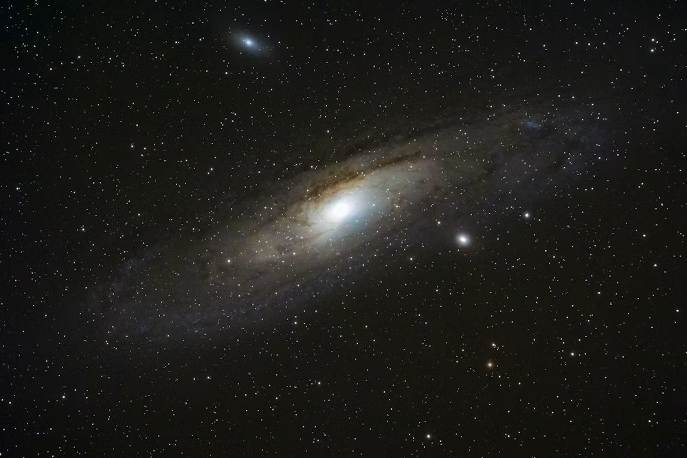

Mauna Kea Observatories
Big Island of Hawai‘i, USA • ~4,200 m
One of the world’s premier sites for optical, infrared, and submillimetre astronomy. Home to the twin Keck telescopes, Subaru, Gemini North, and CFHT.
Explore major ground-based research facilities worldwide. Use the tool below to locate sites relative to your current location.

One of the world’s premier sites for optical, infrared, and submillimetre astronomy. Home to the twin Keck telescopes, Subaru, Gemini North, and CFHT.
Operated by the European Southern Observatory (ESO). Features four 8.2 m Unit Telescopes working together as an optical interferometer.
An international radio array observing at millimetre wavelengths to study star-forming regions and the early universe in high resolution.
Home to the 10.4 m Gran Telescopio Canarias (GTC), currently the world’s largest single-aperture optical telescope.
Site of Gemini South, SOAR, and the Vera C. Rubin Observatory conducting the Legacy Survey of Space and Time (LSST).
Founded in 1675 and historical location of the Prime Meridian (0° longitude). Today it operates as a landmark astronomy museum.